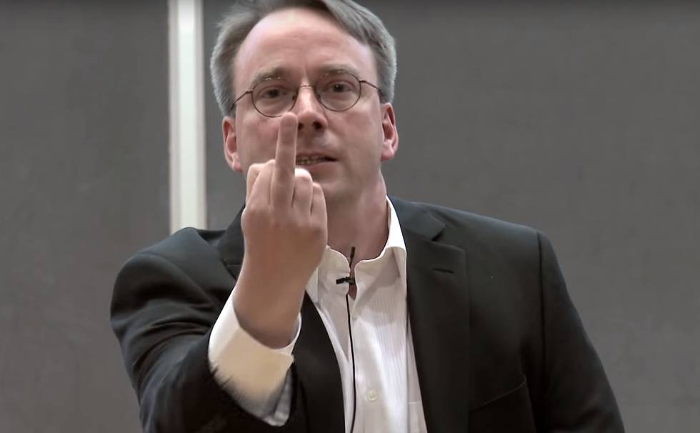
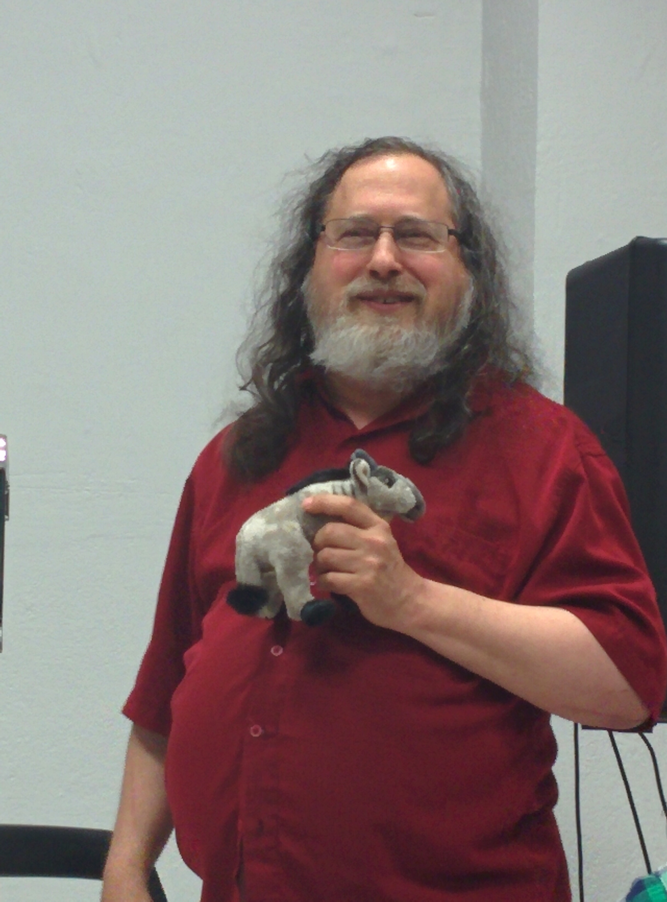

piensa, ya que en 1969, Ken Thompson, de AT&T Bell Laboratories, desarrolló el sistema operativo Unix, adaptándolo a las necesidades de un entorno de investigación, sin saber la importancia que llegaría a tener su trabajo. Un año después Dennis Ritchie (creador del lenguaje de programación C), colaboró con Ken Thompson para pasar el código del sistema Unix a C. Lo que convierto a Unix en un sistema operativo transportable.
Unix creció gradualmente hasta convertirse en un producto de software estándar, distribuido por muchos vendedores tales como Novell e IBM. Sus primeras versiones fueron distribuidas de forma gratuita a los departamentos científicos de informática de muchas universidades de renombre.
En 1972, los laboratorios Bell empezaron a emitir versiones oficiales de Unix y a otorgar licencias del sistema a distintos usuarios. En 1975, Berkeley lanzó su propia versión de Unix (BSD). Esta versión de Unix se convirtió en la principal competidora de la versión de los laboratorios Bell de ATT&T, pero no era la única ya que en 1980, Microsoft desarrolló una versión de Unix para PC llamada Xenix.
En 1991 esta organización desarrolló el SistemaV versión4, que incorporaba casi todas las características que se encuentran en el SistemaV versión3, BSDversión4.3, SunOS y Xenix. Como respuesta a esta nueva versión, varias compañías, tales como IBM y Hewlett Packard, establecieron la Open Software Foundation (OSF) para crear su propia versión estándar del Unix.
Debido a la proliferación de versiones de Unix en las décadas anteriores, el Instituto de Ingenieros Eléctricos y Electrónicos (IIEE) desarrollo un estándar del Unix independiente para el American National Institute (ANSI). Este nuevo estándar ANSI del Unix se llama Portable Operating System Interface for Computer Environments (POSIX). Este estándar define una norma universal a la cual se deben adherir todas las versiones de Unix.
En esa época, los estudiantes utilizaban un programa llamado Minix, que incorporaba diferentes características de Unix. Minix fue creado por el profesor Andrew Tannenbaum. Director del Departamento de Sistemas de la Universidad de Vrije, Amsterdam.
Profesor de Arquitectura de Ordenadores y Sistemas Operativos. Licenciado en el MIT, y doctorado en la Universidad de Berkeley, California. En 1992 participó debate con Linus sobre la idea de este utilizar un núcleo monolítico en vez de los basados en un micro núcleo que Tanenbaum creía que serían la base de los sistemas operativos futuros.

Linus Torvalds Y Richard Stallman
Nacido en Finlandia el 28 de diciembre de 1969 en el seno de una familia de padres de ideología comunista, Linus Torvalds, es una de las piezas fundamentales que completan el rompecabezas de grandes personalidades del Software Libre, y de la informática en general, pero su figura ha sido ciertamente sobrevaluada.
Él llevó adelante la programación de un Kernel (núcleo central de un sistema operativo) cuando el proyecto del sistema operativo libre GNU iniciado por Richard Stallman estaba aún lejos de obtener el núcleo: a principios de los años 90 algunas personas tomaron el Kernel Linux de Linus Benedict Torvalds y lo pusieron junto a otras piezas que venían siendo desarrolladas por Free Software Foundation, y así nació GNU/Linux.

Richard Matthew Stallman.(nacido en Manhattan, Nueva York, 16 de marzo de 1953), con frecuencia abreviado como "rms", es un programador estadounidense y figura relevante del movimiento por el software libre en el mundo.
Entre sus logros notables como programador incluyen la participación en el editor de texto GNU Emacs, el compilador GCC, y el depurador GDB, bajo la rúbrica del Proyecto GNU. Sin embargo, es principalmente conocido por el establecimiento de un marco de referencia moral, político y legal para el movimiento del software libre, como una alternativa al desarrollo y distribución del software no libre o privativo. Es también inventor del concepto de Copyleft (aunque no del término), un método para licenciar software de tal forma que su uso y modificación permanezcan siempre libres y queden en la comunidad.

La principal novedad para este 2017 en el entorno más flexible y liberal (Linux), es que el SQL Server de Microsoft tendrá una versión para GNU/Linux, algo que la misma Microsoft ha confirmado en su blog.
SQL Server es un Sistema Gesto de Bases de Datos (SGBD) relacionales desarrollado por la compañía Redmond, siendo una solución y alternativa muy popular en estos menesteres, sin embargo, Windows siempre había tenido la primacía de uso de este sistema, algo que está a punto de cambiar a corto plazo.
Desafortunadamente, la filosofía Linux de “opensource” y libre distribución quedará relegada, ya que, aunque Microsoft ha dado alegrías en el mundo y entre los usuarios al liberar el código de varios de sus productos, el caso de SQL Server no será el mismo. Este seguirá siendo privativo.
Se espera su lanzamiento para mediados de 2017 , empero a estas alturas ya podemos tener un “preview”, por supuesto una versión de coste.
Especialista pronostican una fiebre de Linux para 2017 debido a las nuevas funcionalidades y relaciones que se están dando entres los grandes corporativos. Sin duda alguna 2017 será un excelente año para Linux.
 Historia
Historia